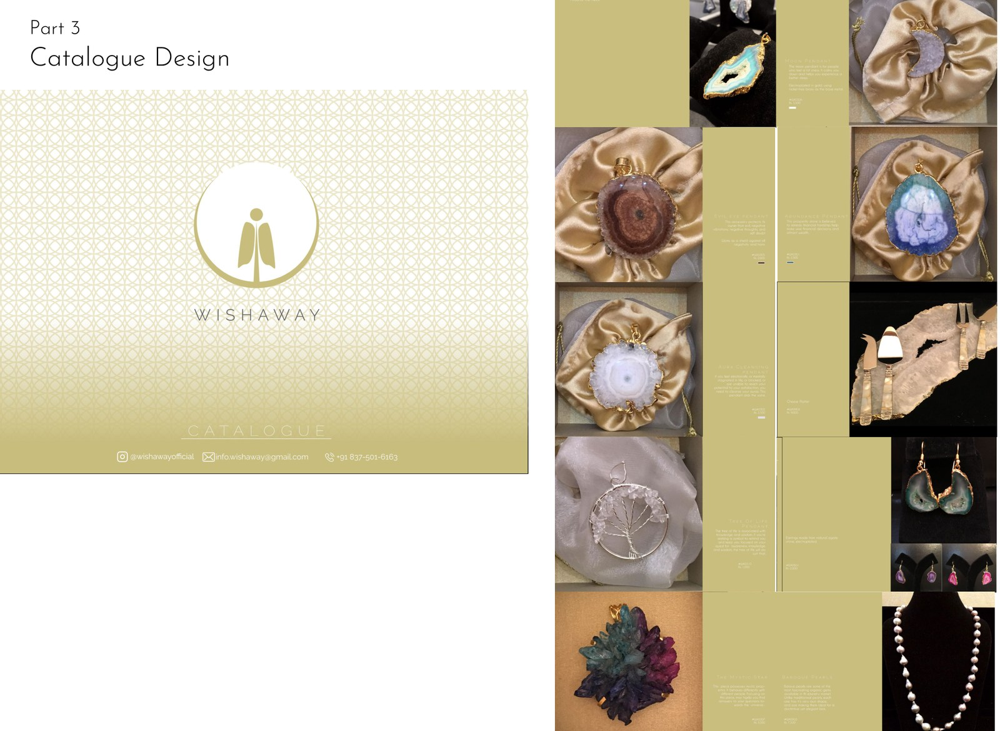
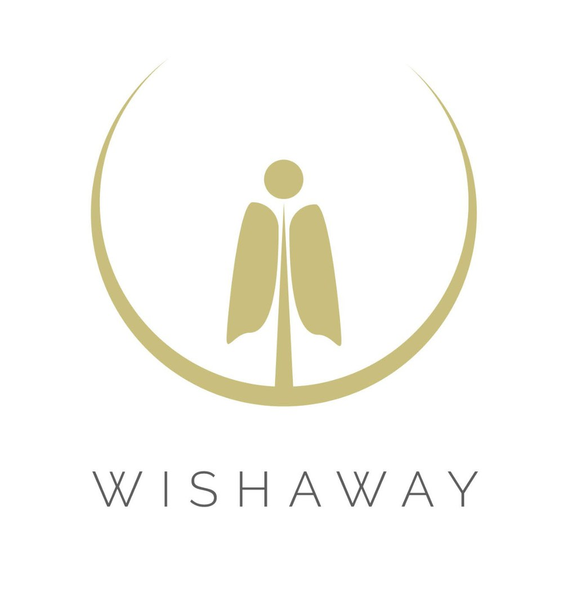
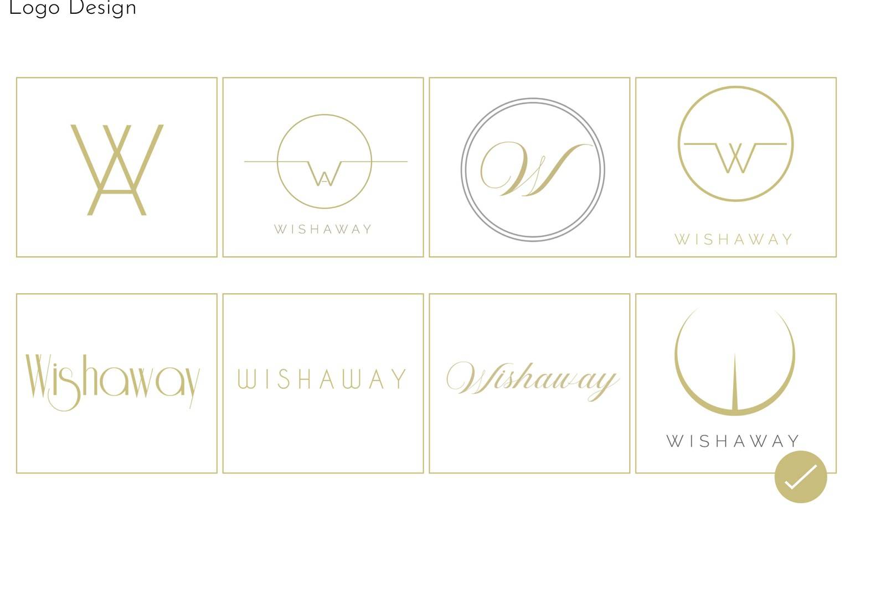
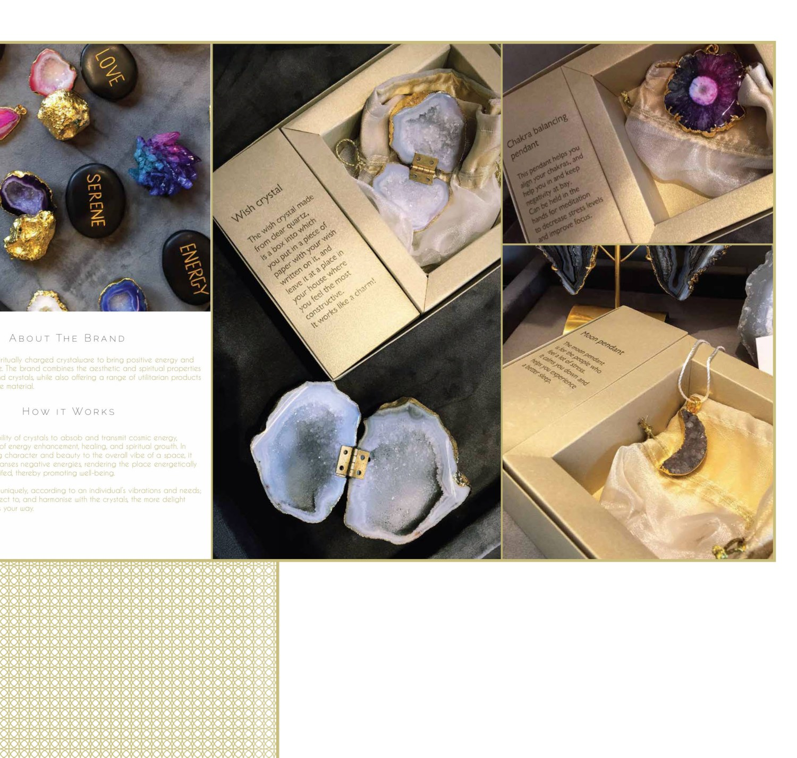

05Related Work
Identity for a spiritually-charged crystalware brand — a gold mark of a robed figure rising inside a crescent, carried onto a trifold and a catalogue. The identity and collateral are mine; the crystalware is the brand's own.

Wishaway offers crystalware meant to bring calm and positive energy — natural stone and crystals, plus utilitarian pieces made from the same materials. The identity had to feel serene and a little spiritual without tipping into cliché.
The work runs from eight logo routes to a chosen mark, then onto a trifold and a catalogue. The crystals shown are the brand's product; the design is the mark, the layout and the system.



A figure, rising in a crescent.
The chosen route sets a simple robed figure inside an open gold circle, like a moon or a halo — calm, upright, still. It draws on the brand's spiritual promise without a literal crystal, and reduces cleanly to a single gold line for small uses.
The trifold and catalogue wrap the brand's stones in gold and a fine repeating pattern, with the mark and a wide-tracked wordmark anchoring each spread. The product photography is the brand's own; the contribution here is the identity and the layout that frames it.